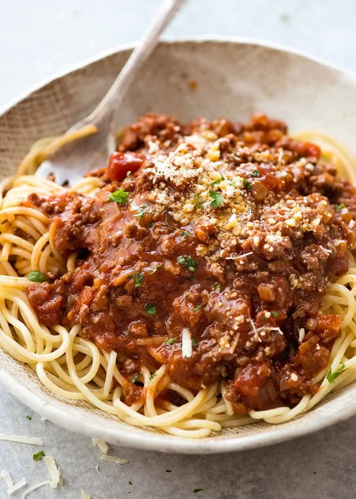

Bolognese Recipe

Description
The Bolognese Sauce is rich, thick and has beautiful depth of flavour. It’s perfect for a quick midweek meal but even better if you can simmer it for a couple of hours!
Ingredients
- 1 1/2 tbsp olive oil
- 2 garlic cloves, minced
- 1 onion, finely chopped (brown, yellow or white)
- 1 lb / 500g beef mince (ground beef) OR half pork, half beef
- 1/2 cup (125 ml) dry red wine (sub water or beef broth/stock)
- 2 beef bouillon cubes, crumbled OR granulated beef bouillon
- 800g / 28 oz can crushed tomato (or tomato passata)
- 2 tbsp tomato paste
- 2 tsp white sugar, if needed
- 2 tsp Worcestershire sauce
- 2 dried bay leaves
- 2 sprigs fresh thyme (or 1/2 tsp dried thyme or oregano)
- 3/4 tsp cooking salt (kosher salt)
- 1/2 tsp black pepper
To Serve
- 400 g / 13 oz spaghetti, dried
- Parmesan cheese and finely chopped parsley (optional)